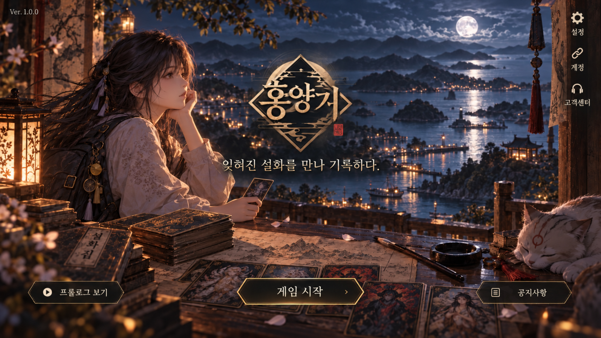

가로 화면으로 돌려주세요
흥양기 UI는 가로 화면을 기준으로 제작되었습니다.

불러오는 중...
0%
다시 불러오기
✦
탐험 준비 중
이동 경로와 조사 기록을 불러옵니다.
다시 시도
‹ 지도
Lv. 12 아인
기록 32%
●
127,430
◆
3,860
--:--
----
첫 이야기
여자만의 바람
지도를 펼쳐 첫 목적지를 확인합니다.
이어가기
›
건너뛰기
아인이 가방을 앞으로 내린다.
건너뛰기
아인이 백팩을 앞으로 내린다.
건너뛰기
아인이 카드 케이스를 꺼낸다.
건너뛰기
아인이 기록책을 꺼낸다.
‹
TRAVEL RECORD
지도
●
127,430
◆
3,860
첫 여정 · 지도 사용
주요 지역은 모두 볼 수 있지만, 첫 목적지는 여자만으로 정해져 있습니다.
동강면
대서면
남양면
과역면
두원면
점암면
고흥읍
풍양면
포두면
영남면
도덕면
도화면
동일면
봉래면
금산면
도양읍
여자만
고흥군 행정구역·해안 지형 기준 재구성 · 던전 표식은 탐험 후 추가
⌂
고흥읍
✦
여자만
⚓
녹동항
△
팔영산
♧
거금도
♜
나로도
◌
소록도
‹
AIN'S TRAVEL BAG
인벤토리
●
127,430
◆
3,860
아인의 여행 가방
소지품은 실제 탐험 행동과 연결됩니다.
무게
11.6 / 30.0 kg
빠른 소지품
정렬 변경
‹
COMPANION CARDS
카드
●
127,430
◆
3,860
보유 카드
진화
동행
카드를 선택해 기록을 확인합니다.
1~6성은 존재의 모습이 유지되며 프레임과 영험만 깊어집니다.
현신 미리보기
진화
‹
HEUNGYANG RECORD
기록
●
127,430
◆
3,860
지역 기록
0 / 0
‹
JOURNEY FORMATION
동행 준비
●
127,430
◆
3,860
제1 신진 · 5인
현실에 펼칠 카드
준비도
0
‹
MARKET & RITUAL EXCHANGE
상점
●
127,430
◆
3,860
오늘 들어온 물건
‹
JOURNEY LOG
임무
●
127,430
◆
3,860
SYSTEM
설정
×